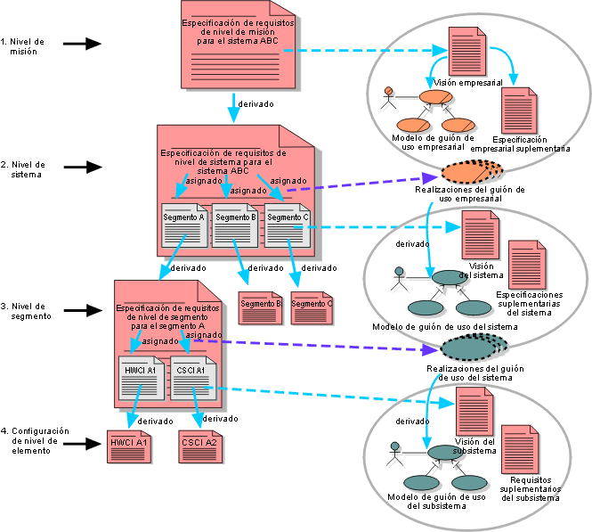

| Concepto: Requisitos derivados |
 |
|
| Elementos relacionados |
|---|
IntroducciónExiste una jerarquía inevitable de requisitos asociados al desarrollo del sistema, desde el menos detallado, que define la misión del sistema o los objetivos del usuario resumidos para el sistema, hasta el más detallado, posiblemente con varios niveles intermedios. En el nivel más detallado, los requisitos se pueden expresar con el vocabulario de la tecnología que utiliza el sistema; pero, en el nivel superior, suelen expresarse de forma más abstracta en el lenguaje del dominio que servirá el sistema, como posibilidades, servicios, comportamientos, funciones, características, etc.; a menudo, la elección de una palabra u otra es arbitraria. Es posible atribuir diferentes significados a estas palabras para expresarse de forma más precisa (por ejemplo, es posible que la descripción de un comportamiento en particular de un sistema no revele demasiado sobre su objetivo o intención, y que sea necesario otro tipo de descripción), aunque este no es el objetivo ahora. El perfeccionamiento de requisitos (del nivel superior, añadiendo más detalles) puede efectuarse de una manera puramente funcional, es decir, dividiendo las funciones en subfunciones o subtareas que las soportan, sin referencia a ningún tipo de arquitectura de realización, y pueden ponerse en un nivel en el que lo descrito (si el sistema se construyó de esta manera) se incorporará al sistema y, quizás, no tenga comunicación directa fuera del sistema. Este sería el caso, por ejemplo, en una propuesta de análisis estructurado que profundizase hasta la burbuja de transformación primitiva. Esta propuesta es imprudente, en primer lugar, porque lleva a la identificación de elementos como requisitos que no son requisitos en absoluto, sino que simplemente funcionan como productos de trabajo de la descomposición; en segundo lugar, puede conducir a arquitecturas pobres (por ejemplo, que no satisfagan los requisitos no funcionales o los cumplan incorrectamente), si el diseñador correlaciona la realización muy estrechamente con la descomposición. Sin embargo, hay un motivo válido para realizar cierta descomposición funcional cuando los objetivos de visión se expresan en un nivel superior, al tiempo que se limita el alcance de la descomposición a funciones o posibilidades discernibles, es decir, lo suficientemente detalladas para capturar todos los comportamientos, funciones, etc. significativos (para los interesados), de modo que el diseñador pueda realizarlos correctamente. Los requisitos perfeccionados (más o menos directamente) a partir de requisitos de un nivel superior son un tipo de requisitos derivados. Requisitos derivadosA continuación, se muestra un ejemplo sencillo:
Existe otro tipo de requisito derivado. Cuando los requisitos del nivel de sistema están expresados con el detalle adecuado para su realización, debe:
Estos requisitos de nivel inferior son requisitos derivados; que surgen conjuntamente con la descomposición del sistema. Esto contrasta con una propuesta basada en la funcionalidad, donde la partición se produce sin considerar ninguna descomposición arquitectónica, y la perfección de los requisitos del nivel de sistema tal como se describe en la introducción. Requisitos asignadosLos requisitos asignados son requisitos que se han asignado (de acuerdo con consideraciones funcionales) a componentes de un sistema, como subsistemas de hardware o software. En el nivel superior, cuando, por ejemplo, se piensa en los requisitos del nivel de misión para un sistema de sistemas, puede que siga siendo adecuado elaborar estos requisitos funcionalmente y, a continuación, particionar los requisitos derivados resultantes y asignar los grupos a sistemas, quizás perfeccionándolos más antes de la realización. Después, la preferencia es continuar igual que en los requisitos derivados. Incluso en el nivel del sistema de sistemas, puede seguir este procedimiento, utilizando un enfoque de modelado empresarial. Tenga en cuenta que, en un enfoque derivado, el sistema se descompone en entidades y se determinan los requisitos de las entidades mediante el estudio de cómo colaboran para satisfacer los requisito de nivel superior. En un enfoque funcional asignado, se descomponen los requisitos y se especifican las entidades que satisfacen los requisitos del nivel inferior. El enfoque que se debe utilizar depende del contexto y de las expectativas culturales y contractuales. Por ejemplo, la NASA (Administración Nacional de Aeronáutica y del Espacio) [en la publicación Software Assurance Guidebook, NASA Goddard Space Flight Center Office of Safety, Reliability, Maintainability and Quality Assurance, 9/89] define los requisitos que deben existir en cuatro niveles de detalle:
 Niveles de requisitos y correlación con RUP. Normalmente, los contratos se ofrecen en el nivel 3. La NASA está acostumbrada a tratar los requisitos de esta manera, por lo que es natural que las organizaciones que trabajan con la NASA adopten una taxonomía similar. De este modo, los desarrolladores seguirían disponiendo de una flexibilidad considerable para derivar los requisitos de nivel inferior; pero, dado el elevado nivel de abstracción de los requisitos del nivel de misión (suelen parecerse a los requisitos del nivel de programa), la derivación de los requisitos del nivel de sistema (y su asignación a segmentos) se puede producir de forma natural a lo largo de líneas funcionales. A pesar de esto, con el interés en arquitecturas empresariales, cada vez es más común que los requisitos del sistema se deriven mediante consideraciones arquitectónicas. La figura anterior ilustra esto y muestra la correlación de los niveles de la NASA con los productos de trabajo de RUP (incluido el modelado empresarial). Fíjese como, en el proceso RUP, la asignación que se muestra en el flujo tradicional se realiza en el proceso de ejecución de casos de uso y la agregación posterior de comportamiento. Las líneas de guiones azules enlazan los productos de trabajo en un nivel similar. |
© Copyright IBM Corp. 1987, 2006. Reservados todos los derechos. |